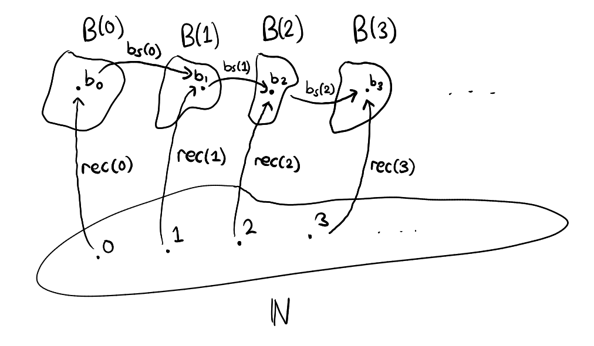

Part 5 - The Natural Numbers¶
It is now time to properly define ℕ:Type, the type of natural numbers. We specify the term introduction rule as follows: there is a term 0:ℕ and given any n:ℕ we can obtain the "next" natural number by applying a successor function s:ℕ→ℕ
Term introduction rule¶
With
1 := s(0), 2:= s(s(0)), ...and so on...
Term elimination rule¶
Given a dependent type n:ℕ ⊢ B(n):Type, we need to specify how to construct a term of type ∏n:ℕ, B(n). To do so, we just need to apply ideas from natural number induction and translate them into the language of type theory. Doing so gives us the following, we require :
- a term of
B(0):Type - given any
n:ℕandp:B(n):Type, a construction of a term ofB(s(n)):Type.
in order to construct a term of type ∏n:ℕ, B(n). Thus we infer the following elimination rule :
Alternatively we could have removed b₀:B(0) and bₛ:∏n:ℕ, B(n) → B(s(n)) from the top and replaced the bottom with
rec_ℕ : B(0) → [∏n:ℕ, B(n) → B(s(n))] → [∏n:ℕ, B(n)]
both versions are equivalent. I just find the top one a bit cleaner.
When B(n) does not actually depend on the choice of n:ℕ then we get the simplified version :
which is useful for defining operations on ℕ, as an example we show how to define a function double:ℕ→ℕ that doubles numbers. But first, we introduce the computation rules.
Computation rules¶
here is a diagram to illustrate (we simplify rec_ℕ(b₀,bₛ) := rec) :

Doubling function¶
A doubling function on the natural numbers is a function Double:ℕ→ℕ saatisfying Double(n) := 2n for all n:ℕ. Such a function can be constructed by using the simplified elimination rule on ℕ with B := ℕ and supplying a suitable b₀:ℕ and bₛ:ℕ→ℕ→ℕ so that rec_ℕ(b₀,bₛ) := Double.
Figuring out how to select a suitable b₀ and bₛ is easy. We just have to apply the computation rules and fill in the blanks. Suppose we have been given suitable b₀ and bₛ but without knowledge of their values, then the first computation rule gives :
rec_ℕ(b₀,bₛ,0) := Double(0) := b₀
Obviously we want Double(0) := 0 so we must select b₀ := 0. Figuring out bₛ is a bit harder. Given any n:ℕ, the second computation rule states that
rec_ℕ(b₀,bₛ,s(n)) := bₛ(n,rec_ℕ(b₀,bₛ,n))
--- simplifies to
Double(s(n)) := bₛ(n,Double(n))
n:ℕ
Double(s(n)) := Double(n+1)
:= 2n + 2
:= s(s(Double(n)))
--- thus
bₛ(n,Double(n)) := s(s(Double(n)))
bₛ := λn:ℕ,λm:ℕ, s(s(m)). Notice that the first input of bₛ is irrelevant to the computation but it must be included anyway to ensure that bₛ has the type ℕ→ℕ→ℕ as needed, lest we have bₛ:ℕ→ℕ.
Hang on!
Double(s(n)) := s(s(Double(n)))is not something we can determine with our type system just yet.. we haven't even defined+in our type system.That's right, we don't know that
Double(s(n)) := s(s(Double(n)))is true, we just went ahead of ourselves and did some pretend arithmetic.. but that is to figure out how we needDoubleto behave recursively, i.e, how to defineDouble(s(n))in terms ofDouble(n).Once done, we select
bₛspecifically to ensure thatDouble(s(n)) := s(s(Double(n))), the recursive property we want true, holds by virtue of the computation rule.
Here is the doubling function in full, constructed from scratch :
Double := rec_ℕ(0,[λn:ℕ,λm:ℕ, s(s(m))])
As an exercise, try to verify that
Double(3) := 6by unfolding the definitions and repeating the computation rules.
We can construct many other functions by following the same process. As another example, we will construct the addition function +:ℕ→ℕ→ℕ.
Addition function¶
We do the same thing all over again but with B := ℕ → ℕ this time. This will be a lot more difficult, but the principle is the same. First, notice that
rec_ℕ(b₀,bₛ) := + --- hence
rec_ℕ(b₀,bₛ,0) := + 0
+ 0 ??? How does this make sense? I acknowledge that this is all a bit unconventional but I promise it makes sense, give me a chance to explain.
Let's ask the simple question first : What is the type of + 0? Well, given that +:ℕ→ℕ→ℕ and 0:ℕ, we must have + 0:ℕ→ℕ. This is simply the elimination rule for the function type. Moreover, one of the computation rules state that :
+ := λn:ℕ,λm:ℕ, +(n,m)
where +(n,m) := n + m, this is simply writing + with the Polish notation which does nothing but to emphasize that + is indeed a function. This is helpful because most education systems present and teach + as an operator, and the infix notation n + m makes it harder to make the connection that + can be thought of as a function.
It is not that + being an operator is untrue, but rather that "operator ⊆ function" and we wish to look at things from a broader perspective.
Going back on topic, this means that
+ 0 := λm:ℕ, +(0,m) := λm:ℕ, m
So it is clear that + 0 := Id_ℕ where Id_ℕ:ℕ→ℕ is the identity function (leaves output unchanged) on ℕ. Hence b₀ := Id_ℕ.
To tackle defining bₛ we first introduce function composition :
Definition. Given types
A, B, Candf:A→B, g:B→Cwe shall writeg∘f:A→Cas short hand for the lambda abstractionλa:A, g(f(a)).
Now notice that for any given n:ℕ the second computation rule gives the equality :
+ s(n) := bₛ(n,+ n)
+ s(n) := λm:ℕ, s(n) + m
:= λm:ℕ, n + s(m)
:= [λm:ℕ, n + m] ∘ s
:= (+ n) ∘ s
bₛ := λn:ℕ, λf:ℕ→ℕ, f∘s.
Again, the first input is useless, it actually only becomes useful when we apply the original (actually dependent) version of the elimination rule for
ℕ.
You can verify that indeed for these choices of b₀ and bₛ, a function that models addition is constructed. Here is how we would compute 2+1 for example
2 + 1 := (+ 2) (1)
:= (+ 1) ∘ s (1)
:= (+ 1) (2)
:= (+ 0) ∘ s (2)
:= (+ 0) (3)
:= 3